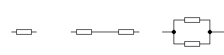

Jaroslav Páral
Jakub Streit
Rudolf Hlaváček
a další
ROBOTICKÝ MANUÁL
aneb
Co se hodí vědět při stavbě
a programování hobby robotů
www.robotarna.cz
www.sokolska.cz
www.robotikabrno.cz
za kolektiv autorů
Miroslav Burda
editor
dokumentace@robotikabrno.cz
verze 1.0
2018-09-22 07:44:13
Tento text je určen pro začátečníky a mírně pokročilé v oblasti stavby autonomních robotů – převážně středoškoláky v prvním ročníku, kteří se pokoušejí postavit svého prvního autonomního robota, nejčastěji pro nějakou soutěž.
Protože byl sepsán na pracovištích Robotárna1 a SPŠ Sokolská2 , jsou některé části určené především členům jejich kroužků. Ale většina textu je použitelná všeobecně.
Každý robot se musí
Přitom můžou nastat zhruba dvě situace:
Už bylo zmíněno, že stavba robotů zahrnuje tři propojené, ale relativně nezávislé okruhy: návrh a výrobu mechanické konstrukce, návrh a zapojení elektroniky a programování. Proto je dobré roboty stavět v týmech, kde se jednotliví členové zaměřují na tyto oblasti a navzájem se doplňují. Navíc každý tým potřebuje řadu pomocných činností (nákup součástek, vyhledávání údajů na internetu a pod.). Je dobré mít proto v každém týmu ještě pomocníka, který podporuje ostatní a umožňuje jim soustředit se na jejich hlavní úkoly.
Úplně ideální potom je, když každou funkci v týmu zastávají dva lidé, takže se mohou vzájemně zastupovat. Tým by potom měl celkem osm členů – dva mechaniky, dva elektroniky, dva programátory a dva pomocníky. To se ale v praxi téměř nikdy nepodaří. Často nastane právě opačný případ, kdy tým má pouze dva nebo tři členy, kteří se o všechny činnosti musí nějak podělit.
V každém případě ale platí, že je výhoda, pokud lidé v týmu znají i věci mimo jejich „hlavní obor“, tj. když například programátor zná základy elektroniky.
Začátečníci obvykle tuto posloupnost nedodrží, začnou bodem 5 a pak staví mechaniku pro 3 a více verzí robota (někdy tak odlišných, že už se vlastně jedná o různé roboty). Až potom zjistí, že je to dost práce navíc. A taky dost času navíc, který potom před soutěží chybí.
Hardware:
Znalosti:
Taky se hodí vědět, že:
Plán účastnit se se svým robotem soutěže je nejen motivací pro začátek stavění robota, ale hlavně motivací pro jeho dokončení, protože soutěž nepočká. V současné době se soustředíme na tyto soutěžní dny: Robotiáda v Brně a Robotický den v Praze. Dále existuje Istrobot v Bratislavě, kam téměř nejezdíme. Hlavní důvod je, že soutěž bývá v dubnu, kdy roboti ještě nejsou hotoví.
U všech soutěží, kterých se rozhodnete zúčastnit, je potřeba důkladně nastudovat pravidla. Hlavní členové týmu by je měli znát víceméně zpaměti.
Na Robotiádě je podmínka, že hlavní části robota (řídící systém, pohony, senzory) musí být z Lega.
Robotiáda probíhá obvykle na začátku února a obsahuje několik soutěží. Každá z nich je rozdělená na kategorii ZŠ a SŠ. Které soutěže se zúčastníte, je v podstatě na vás, s vyjímkou Freestyle, kterou příliš nedoporučuji kvůli velmi nejistému výsledku. Pokud začnete v září, je potřeba se přípravě, stavbě a programování robota věnovat alespoň jedno odpoledne týdně.
Robotický den probíhá obvykle na začátku června a obsahuje také několik soutěží, které jsou rozdělené na kategorie „Roboti pouze z dané stavebnice (např. z Lega)“ a „Roboti z čehokoliv“. Není zde dělení podle věku, takže ZŠ a SŠ soutěží v jedné skupině s VŠ a dospělými podle toho, jak se kdo přihlásí. Výběr vhodné soutěže je pro úspěch zásadní a je nezbytné jej konzultovat s vedoucím kroužku. Pro stavbu funkčního robota je potřeba věnovat přípravě, studiu a stavbě minimálně jedno odpoledne týdně, pokud jste pomocný člen týmu a dvě odpoledne týdně, pokud jste např. hlavní mechanik nebo hlavní programátor týmu. Čím víc, tím líp, protože zkušenosti ukazují jasně, že času není nikdy dost.
Tato (ne)doporučení vycházejí ze zkušeností z předchozích let a odhadu reálných možností středoškolských studentů.
Na Robotický den můžete stavět pouze z „čistého“ Lega, viz pravidla. Na Robotiádě můžete využít do konstrukce například díly z překližky pro větší tuhost a snazší montáž. Překližkové díly se dají navrhnout například v modelovacím systému Onshape a následně je možné je vyřezat na laseru na pracovišti Fablab.
Pro programování robota z Lega máte dvě možnosti:
Pozor, toto prostřední pracuje pouze pod Windows7 a novějšími.
Roboty stavíme nejčastěji pro nějakou soutěž. Podle zadání soutěže se rozhodujete, co bude robot na hřišti dělat, jak se bude orientovat atd. Z toho potom plynou požadavky na konstrukci.
Roboty rozlišujeme podle způsobu ovládání a podle velikosti.
Každý robot může být buď řízený nebo autonomní. Autonomní znamená, že je naprogramovaný a během soutěže nebo prezentace se pohybuje samostatně.
Roboty můžeme řídit po kabelu nebo bezdrátově, například přes bluetooth.
Na škole a v Robotárně stavíme a programujeme hlavně roboty dvojího typu :„střední“ a „velké“. Ostrá hranice mezi nimi není, doporučení pro oba typy se dají kombinovat podle situace. Střední je robot se základnou přibližně od 10x10 cm do 25x25 cm.
Celého robota nejprve navrhneme ve vhodném CAD programu: Onshape, Solidworks nebo Fusion.
Pokud jako základní materiál zvolíme překližku nebo například plexisklo (kombinované s díly z lega), můžeme díly vymodelované v CADu nechat vyřezat na laseru na pracovišti Fablab. To dramaticky urychluje práci. Pro konstrukci prototypů se také hodí měkčené PVC.
Při stavbě robotů se držíme osvědčeného schématu:
Podvozek středních robotů tvoří základní deska z překližky, plexiskla nebo PVC. Podvozek velkých robotů tvoří rám z hliníkových profilů typu „L“ tvaru obdélníku, osmiúhelníku nebo kruhu.
Na podvozku jsou připevněné dva motory včetně převodovek, které se koupí hotové. V žádném případě se nepokoušejte koupit pouze motor (např. protože je levnější) a vyrábět si převody sami. U velkých robotů volíme motory z akušroubováků nebo z akuvrtaček, jiné typy motorů jsou buď pomalé nebo slabé. U středních robotů stačí motory modelářské, dnes nejčastěji kupované z Číny.
Dále jsou zde dvě kola, každé připojené ke svému motoru a jedna nebo více podpěr podvozku, obvykle z kartáčku na zuby. Motory s koly lze umístit doprostřed nebo dozadu, podle toho, co má robot na hřišti dělat.
Na podvozek se umisťuje konstrukce z hliníkových tyčí, profilů nebo z merkuru, s pomocí které robot plní svoje úkoly. U velkých robotů se méně tuhé materiály neosvědčily, u středních často stačí konstrukce z překližky.
Datasheet je dokument, ve kterém jsou detailně popsány vlastnosti a možnosti dané elektronické součástky. Každá součástka má svůj datasheet.
Datasheet pro každou součástku je možné najít na webu, například na stránce www.datasheetcatalog.com nebo na stránkách výrobce/prodejce součástky. Všechny datasheety jsou anglicky.
Nepájivé kontaktní pole slouží pro první rychlé zapojení součástek do vytvářeného obvodu. Je to deska s maticí otvorů, které jsou vždy po pěti propojené. Do těchto otvorů zasunujete vývody součástek a podle potřeby je spojujete pomocí drátků. Díky tomu nemusíte pracovat s páječkou, a zároveň je zapojený obvod snadno rozebiratelný, takže můžete zapojení sestavovat, testovat, upravovvat a opět rozmontovávat. Po stranách jsou navíc dlouhé lišty otvorů určené pro přivedení napájení.
Rezistor nebo také odpor1 je součástka, která klade elektrickému proudu určitý odpor neboli ho omezuje. Toho se používá jako ochrana před zničením čipu nebo jeho části. Odpor se značí R. Jednotkou odporu je 1 Ohm, značka Ω.
Dva rezistory (nebo jiné součástky) mohou být zapojeny buď sériově (tj. za sebou) nebo paralelně (tj. vedle sebe), viz obrázek 3.1.

Speciální roli v čipu mají interní2 tzv. pull-up a pull-down rezistory.
Kondenzátor je součástka, která uchovává elektrický náboj. Jeho hlavní vlastností je kapacita. Jednotkou kapacity je Farad, značka F. V praxi se používají násobky jako mikrofarad (μF), nanofarad (nF) a pikofarad3 (pF). Kondenzátory se nabíjí a vybíjí různě rychle a mají různou kapacitu. Keramické kondenzátory mají nejmenší kapacitu(pF, nF) a jejich nabití a vybití je nejrychlejší, tantalové mívají kapacitu okolo pár μF a jejich nabití a vybití je pomalejší a nejpomalejší jsou elektrolytické s kapacitou stovek až tisíců μF. U tantalových a elektrolytických kondenzátorů musíme dát pozor na polaritu, tj. kam připojujeme + a kam -. Další důležitý údaj je maximální hodnota napětí, kterou kondenzátor snese.
Kondenzátory dokážou eliminovat napěťové špičky, které by jinak znemožnily provoz řídící desky. Proto je připojujeme paralelně ke zdrojům napěťových špiček (motory, serva).
Dioda je součástka, která usměrňuje elektrický proud. To znamená, že pokud ji zapojíme do elektrického obvodu, tak zajistí, že proud bude téct pouze jedním směrem. Proto budeme diodu používat jako ochranu proti tzv. přepólování – chybnému zapojení baterie nebo součástky do obvodu, které obvykle vede ke zničení součástky. U samotné diody také záleží na polaritě, tj. při jejím zapojení musíme dávat pozor, kde má kladný pól a kde záporný.
Na diodě vzniká úbytek napětí, se kterým musíme počítat při návrhu obvodu. Tak například pokud připojím na diodu s úbytkem napětí 0,6 V připojím 12 V, tak za diodou bude napětí 11,4 V.
Ze začátku nám bude stačit, pokud budeme používat diody 1N4148 a 1N4007.
LED4 je součástka, která není primárně určená k usměrnění proudu, ale k signalizaci, zda obvodem protéká proud. K LED se vždy musí připojit vhodný rezistor.
Tranzistor je součástka, která umožňuje pomocí malých proudů z čipu řídit větší proudy, například do reproduktoru nebo motorku.
Tranzistor má tři nožičky: báze, kolektor a emitor. Tranzistorů existuje mnoho typů: bipolární, JFET, MOSFET a další. Bipolární tranzistory existují ve dvou provedeních PNP a NPN5 . Tranzistory mají prakticky dvě použití: mohou pracovat jako spínač (vypínač) nebo jako zesilovač. Budeme se zabývat jednodušším použitím, tj. jako spínače. Budeme používat tranzistory NPN. Pokud bude přes bázi do emitoru téct omezený (malý) proud, tranzistor se otevře a přes kolektor do emitoru bude téct velký proud. Tak nám stačil malý proud k řízení velkého proudu. A toho budeme využívat.
Ze začátku nám bude stačit používat tranzistory BCC337, BCC547 a BD911.
Cívka neboli tlumivka je součástka, jejíž hlavní vlastností je indukčnost, jednotka henry, značka H. V praxi se používají milihenry (mH) a mikrohenry ( μH).
Mikroprocesor, mikrokontrolér, čip znamenají totéž – integrovaný obvod, který se snažíme naprogramovat, aby řídil robota nebo jeho část.
Pin je vývod (nožička) čipu. Jednoduché čipy (např. ATtiny) mají osm pinů, složitější čipy mají 32, 40, nebo také 100 pinů.
Pin může být nastavený jako vstupní nebo jako výstupní.
Pokud je pin nastavený jako vstupní, umí určit, zda na něm je napětí odpovídající logické jedničce (5 V nebo 3,3 V podle typu čipu) nebo logické nule (0 V) . U některých pinů lze i přečíst, jaké je na něm analogové napětí (např. v rozsahu 0 - 1023 => 0 V - 3,3 V).
Pokud je pin nastavený jako výstupní, umí se nastavit na logickou jedničku nebo logickou nulu.
Čip nemůže řídit například motor přímo, protože jedním pinem může protékat obvykle maximálně 40 mA. Většina motorů potřebuje mnohem větší proud. Proto se používají součástky zvané drivery, které podle pokynů z čipu řídí proud z baterií do motorů a servomotorů. Jsou to speciální integrované obvody pro řízení motorů, které jsou složeny z mnoha tranzistorů a dalších prvků.
Níže jsou některé drivery uvedeny.
je driver postavený na čipu HR8833 a použitý na desce RBControl. Je ideální pro řízení pohonů středních robotů napájených dvěma Li-On bateriemi. Každý motor může být poháněn 1,5 A na 10 V.
Driver vnh2sp30 umí řídit pomocí PWM motor až do napětí 16 V, trvalého proudu 14 A a špičkového proudu 30 A. Pro takto velké proudy potřebuje účinné chlazení, např. chladič s ventilátorem. Je ideální pro řízení pohonů velkých robotů včetně motorů z akuvrtaček. Driver umí pomocí PWM jízdu vpřed, vzad, brzdění (motory jsou ve zkratu, když je na ně přiváděna logická 1 z PWM) a signál stop. Příklad programu pro použití tohoto driveru je v kapitole 5.4.7. Tyto drivery jsou na Robotárně dostupné na deskách Arduino VNH2SP30 Monster Moto Shield. Relativně dobrá knihovna pro ně je zde.
Driver RoboClaw je deska, která umožňuje řídit dva motory o odběru 15 A. Pro tyto motory má také na sobě enkodéry (A/B signál). Dále má na sobě 5 V 3 A spínaný zdroj. Stránky výrobce. Nevýhodou je vyšší cena.
Samostatnou kapitolou jsou drivery pro střídavé motory. Střídavé motory jsou malé, lehké, výkonné. Odrive umožňuje je napájet z běžných baterií. Protože ale driver i motory něco stojí a zatím je nikdo nekoupil a nerozběhal, nemáme s jejich provozem zkušenosti.
Většinu čipů je potřeba napájet přesně 5 V nebo 3,3 V. Jak toho docílit z baterií, na kterých je například 9 V nebo 12 V, zkrátka více než 5 V? Navíc napětí na bateriích kolísá podle toho, jak moc proudu zrovna odebírají motory. Pro napájení čipů je proto nutné použít stabilizátor.
Stabilizátor je součástka, která z kolísavého vyššího napětí vyrobí přesné napětí nižší. Přitom nějaké napětí také sama spotřebuje. Nejčastěji se používají stabilizátory řady 78XX, kde XX značí, na kolik voltů součástka stabilizuje, například 7805 stabilizuje na 5 V.
Aby stabilizátor mohl pracovat správně, je potřeba, aby napětí, které přivedeme na jeho vstup, bylo obvykle aspoň o 2 V vyšší než které potřebujeme, tj. pokud budu chtít stabilizovat napětí na 5 V, musím stabilizátor napájet aspoň 7 V. Přesné hodnoty pro každý stabilizátor jsou v jeho datasheetu.
Stabilizátor má tři piny (vstup, zem, výstup). Zapojí se takto: kladný pól baterie (+) se napojí na vstup, záporný pól na zem (−). Mikrokontrolér se zapojí pinem VCC na výstup stabilizátoru a GND se zapojí na zem stabilizátoru. Tímto máme připojený mikrokontrolér na napájení.
Pokud máme stabilizátor před sebou tak, abychom přečetli jeho označení, např. L7805, potom první pin zleva je vstup, druhý je zem a třetí, tj. úplně vpravo je výstup. Na vstup připojíme 7 V až 12 V, prostřední pin uzemníme, a poslední pin vyvedeme na VCC mikrokontroléru. Dále je potřeba věnovat pozornost zapojení kondenzátorů. Mezi vstup a zem připojím podle datasheetu kondenzátor s kapacitou 330 nF. Mezi výstup a zem kondenzátor 100 nF.
Pokud budeme potřebovat provozovat některé procesory na vyšší frekvenci, použijeme krystal. Například původní frekvence mikrokontroléru ATMega16 je nastavena na 1 MHz. S pomocí krystalu ji můžeme zvýšit až na 16 MHz. Krystal zapojíme takto: Jeden pin krystalu (je jedno, který) připojíme na pin XTAL1 a druhý na XTAL2. Dále na pin XTAL1 připojíme jednu nožičku kondenzátoru a druhou na digitální zem (11-GND). To samé u pinu XTAL2. Hodnotu kondenzátoru můžeme volit od 12 pF do 22 pF.
Pokud použijeme vodní model, tak (elektrický) proud je množství vody, které proteče vodičem za jednu sekundu.6 Značka: I, jednotka: 1 A = 1 ampér.
Elektrické napětí měříme vždy mezi dvěma body. Můžeme si ho představit jako rozdíl výšek dvou vodních hladin. Z výše položeného jezera (kladné napětí, +) teče voda (el. proud) do níže položeného (zem, nulový potenciál, −). Značka: U, jednotka: 1 V = 1 volt.
Mezi napětím U a elektrickým proudem I platí vztah:
Konstanta R se nazývá elektrický odpor, měříme ho ohmech, značka Ω.
Z Ohmůva zákona můžeme vyjádřit proud I:
Výkon je definován jako součin napětí a proudu:
Na součástkách, na kterých je úbytek napětí a kterými protéká proud, vznikají tepelné ztráty.
Příklad 1: Na rezistoru je úbytek napětí 3,6 V a protéká jím 240 mA. Jaký je tepelný ztrátový výkon?
Příklad 2: Diodou 1N4148 bude procházet 100 mA, při tomto proudu bude úbytek napětí na diodě 1 V. Nezničíme diodu 1N4148?

Příklad 3: Na stabilizátor L7805 přivádím 12 V, stabilizátor mi vytváří 5 V stabilizovaného napětí a odebírám z něho 250 mA. Jaký tepelný výkon bude potřeba uchladit?

LED je součástka, která není primárně určená k usměrnění proudu, ale k signalizaci. Může svítit světlem bílým, modrým, zeleným, červeným, ultrafialovým či infračerveným8 .
Pokud připojím diodu správně na napětí, tj. tak aby mohl procházet proud a ono přesto nic, tak jsem diodu spálil, protože jí tekl moc velký proud. A proto musíme vždy k diodě připojit do série rezistor, který omezí proud protékající přes LED. A to podle vzorce:

Příklad 1: Vypočítejte odpor rezistoru, který zapojíme do série k LED. Připojujeme k ní napětí 5 V a provozní proud je 20 mA a maximální proud, při kterém dojde ke zničení diody je 40 mA. Úbytek na diodě je 1,2 V.
Příklad 2: Máme sériově spojeny tři LED, s úbytky napětí 0,6 V, 0,8 V a 1,2 V. Připojíme je k zdroji o napětí 12 V. Rezistor o jak velkém odporu musíme použít, jestliže má diodami protékat 20 mA?
Musíme použít rezistor o odporu 470 Ω.
Měli bychom ještě spočítat tepelný výkon rezistoru. Můžeme použít úbytek napětí na rezistoru vynásobený procházejícím proudem:
Vyšel nám stejný výsledek, použijeme tedy 250 mW rezistor o odporu 470 Ω.
Napětí, proud a odpor měříme pomocí multimetru.
Multimetr přepněte na rozsahy nahoře, skupina Ω.
Po přepnutí na Ω se vlevo zobrazí 1. To znamená, že měřená hodnota je mimo nastavený měřící rozsah. V našem případě je to odpor vzduchu mezi měřícími hroty.
Změřte odpor rezistorů a) držených v ruce, b) umístěných v nepájivém kontaktním poli nebo položených na lavici. Pokud se naměřené hodnoty liší, pokuste se vysvětlit proč.
Při zapojování součástek do nepájivého kontaktního pole dejte pozor, abyste je nezkratovali.
Měřit začněte od největšího očekávaného rozsahu a postupujte dolů.
Pozor, pokud budete měřit odpor rezistorů zapojených se zdrojem v obvodu, může se stát, že naměříte vnitřní odpor zdroje.
Lidské tělo má taky konečný odpor – pokuste se ho změřit.
DC je zkratka pro direct current – stejnosměrný proud. AC je podobně zkratka pro alternate current – střídavý proud. Na multimetru se používají zkratky DCV pro stejnosměrné napětí a DCA pro stejnosměrný proud. Dále zkratky pro střídavé napětí ACV a střídavý proud ACA. Protože baterie poskytuje vždy stejnosměrné napětí, budeme měřit stejnosměrné napětí a stejnosměrný proud.
Nastavte vhodný rozsah multimetru a změřte napětí na baterii.
Dále změřte napětí na rezistoru.
Pozor, pokud měříte napětí, připojte multimetr paralelně (multimetr je mimo měřený obvod a má nastavený obrovský vnitřní odpor).
Pokud měříte proudy (viz dále): připojte multimetr sériově (multimetr je zapojený do obvodu tak, aby proud tekl přes něj).
Zapojte sériově dva rezistory 10kΩ a 20kΩ a baterii a změřte napětí na každém rezistoru a na baterii, výsledky zapište. Mimochodem, právě jste sestavili tzv. napěťový dělič – zapojení, které se používá poměrně často.
Pokuste se získaný výsledek zobecnit a odvodit z Ohmova zákona.
Pozor ! Přepojte červený měřící kabel do zdířky A.
Změřte proud tekoucí zapojeným obvodem.
Odpovídá naměřená hodnota očekávání? Ověřte podle Ohmova zákona.
Pozor ! Pokud se baterie silně zahřívá, je zkratovaná a musí se okamžitě vypojit z obvodu.
Měřáky na konci měření vypínejte – šetří se tím podstatně baterie.
Součástky SMD (surface mount device) nemají nožičky, ale pájí se přímo k ploškám na desku. Postup je podobný jako nožičkových součástek, liší se v tom, že součástka nedrží za nožičky v DPS, takže je potřeba je přidržovat pinzetou na správné pozici na DPS (nikdy ne prstem - mohli byste se spálit). Druhou rukou se trochou pájky součástka přichytí k desce. Potom se pořádně zapájí druhá ploška a poté se opraví zapájení první plošky.
Postup:
Další zajímavé informace k pájení: https://technika.tasemnice.eu/trac/wiki/SMDkecy
Pokud není přímo napsáno něco jiného, znamená motor všude v tomto textu elektromotor na stejnosměrný proud.
Motor připojujeme k řídící desce přes tzv. drivery na ty piny desky, které umožňují vysílat PWM signál.
Abychom věděli, co se s motorem (a tím i s robotem – pokud mu zrovna neprokluzují kola) v průběhu času děje, používáme součástku, která se jmenuje (rotační) enkodér a zjišťuje, jak se motor otáčí. Mít motory, na kterých nebo ve kterých je enkodér rovnou zabudovaný je při stavbě robotů velká výhoda.
Tzv. pomalé enkodéry, např. KY-040 se dají také používat například při zjištění otočení volantu nebo páčky při řízení robota a pod.
Malé motory stačí k desce připojit pomocí tranzistorů.
Pokud chceme řídit motor z čipu stylem start – stop, postačí přes odpor např. 1 kΩ spojit výstupní pin čipu s bází tranzistoru a na emitor a kolektor připojit baterii a motorek zapojený do série.
Dále je potřeba bázi tranzistoru propojit pomocí např. 10 kΩ se zemí. Jinak totiž při vypnutém signálu z čipu báze „visí v luftě“ a chová se jako anténa – indukují se na ní různé signály a většinou se díky tomu motor samovolně slabě otáčí.
Nakonec je potřeba mít společnou zem pro čip i pro motor – pokud to není splněno, obvykle motor nejede. Pokud chceme řídit motor programově pomocí (viz kapitola 3.6.2), musíme navíc mezi emitor a kolektor tranzistoru vložit (obyčejnou) diodu pólovanou závěrně vůči baterii. Při vypnutí tranzistoru vznikají totiž na cívkách motorku napěťové špičky, které deformují tvar PWM signálu. Další proudy se v motoru indukují, když se motor po vypnutí proudu setrvačností otáčí dál.
PWM (Pulse Width Modulation) neboli pulzně šířková modulace je učený název pro tzv. obdélníkový signál – z pinu vychází hodnoty napětí, které zakreslené do grafu mají tvar obdélníku. Proč zrovna obdélník? Protože na tranzistorech i driverech jsou při řízení motoru nejmenší ztráty, když jsou zcela otevřené (přenáší maximum napětí nebo proudu) nebo zcela zavřené (nepřenáší nic). Nejmenší ztráty znamenají také nejsnazší možné chlazení. Proto se snažíme stavům mezi oběma krajními mezemi vyhnout a zkrátit je na minimum.
(Modelářské) servo je krabička, která obsahuje motorek s převodovkou do pomala a řídící elektroniku, která se stará o jeho správné natočení. Obvykle se umí otočit v úhlu 180 stupňů s velkou přesností. Jeho klíčová vlastnost je, že polohu, do které se otočil, se snaží udržet.
Na desce ALKS jsou zapojeny vývody pro pět serv, která lze z desky přímo napájet a řídit. Protože servo (jako každý motor) potřebuje hodně proudu, lze přímo z desky napájet pouze nejmenší serva každé zvlášť. Pro větší serva je na desce připraven mini-USB konektor, do kterého je možné připojit samostatné napájení pro serva.
Pro připojení serv na desku ALKS platí, že GND (zem, mínus) je na okraji desky, 5 V je uprostřed a datový pin je nejblíže čipu.
Deska RBControl umí po osazení spínanými zdroji napájet a ovládat 4 serva nebo 8 mikroserv, která pracují současně. Maximálně je možné připojit až 32 serv nebo mikroserv.
Běžné servo odebírá při provozu 1 A i více, podle velikosti, a to i když se nehýbe. Spotřebuje tento proud na to, aby se udrželo v zadané poloze. Mikroservo je malý typ serva, kterému stačí proud cca 0,5 A.
Pozor! Servo nesnáší přepólování napětí, když se přepóluje, tak shoří (když se přepóluje signál, tak to tolik nevadí).
Jak se řídí pohyb serva? Pro tento účel je ideální právě generování PWM signálu.
Servo se řídí logickým signálem (jedničkou) po dobu od 1 ms do 2 ms (často i od 0,5 ms do 2,5 ms), a celková perioda je 20 ms. Podle toho, jak dlouho signál trvá, tak se servo natočí. Tj. pokud budeme chtít servo maximálně natočit na jednu stranu, nastavíme pin, který slouží jako řídící signál pro servo, na logickou jedničku po dobu 1 ms a pak 19 ms logickou nulu a pak zase logickou jedničku, logickou nulu, atd...
Pokud budeme chtít servo posunout do druhé krajní polohy, necháme logickou jedničku po dobu 2 ms a logickou nulu po dobu 18 ms. Pokud budeme chtít střední polohu, tak jedničku nastavíme na 1,5 ms a nulu na 18,5 ms. Jestliže budeme potřebovat jiný úhel natočení, nastavíme logickou jedničku na odpovídající dobu.
Jednoduchý program pro řízení serva je v kapitole 5.4.6.
Deska ESP32-DevKitC je vývojová deska osazená čipem ESP-WROOM-32, který má řadu výborných vlastností.
Deska se napájí z USB (5 V) a je na ní napěťový převodník na 3,3 V. Přitom USB může dodávat oficiálně 100 mA, v reálu ale běžně dodává 500 mA až 1 A. USB porty jsou také vcelku odolné proti zkratu.
Deska ALKS9 byla navržena přímo na Robotárně Brno právě proto, že hotová deska vás hlavně ze začátku zbavuje nutnosti vědět, co si můžete dovolit kam připojit a jestli to bude fungovat. Na webu má ALKS vlastní wiki stránky. Zde najdete zapojení desky ALKS, její pinout10 a spoustu dalších informací.
Na ALKS se dají nasadit desky ESP 32, Arduino uno a Arduino nano, které jí také poskytují napájení.
POZOR ! Při připojování čehokoliv dalšího k této nebo jiné desce si nechte před zapojením napájení všechno zkontrolovat. Hlavně, pokud připojovaná součástka spotřebuje víc proudu (serva a motory) nebo pokud vyžaduje vyšší napětí.
Pro nasazení desky ESP 32 na ALKS byla napsaná knihovna LearningKit. Aby fungovala, musí být do souboru platformio.ini dopsán řádek lib_deps = 1745 (bez mezery na začátku řádku) a do záhlaví souboru main.cpp doplňte include "LearningKit.h". – viz obrázek 4.1 vpravo.
Pro nasazení desky Arduino nano na ALKS byla napsaná knihovna
LearningKit_nano.h. Aby fungovala, musí být v záhlaví souboru main.cpp
doplněno include "LearningKit_nano.h". Protože knihovna
LearningKit_nano.h využívá knihovnu LearningKit.h, musí být také do
souboru platformio.ini dopsán řádek lib_deps = 1745 (bez mezery na začátku
řádku) – viz obrázek 4.1 vpravo.
RB3201 - RBControl (RBC) je univerzální deska pro stavbu hobby robotů, vyvinutá na Robotárně Brno. Jde v podstatě o shield k desce ESP32 dev kit, který má dva hlavní cíle: rozšířit počet pinů desky ESP32 a umožnit snadné připojení velkého množství různých periférií, především robotických.
Podrobnější popis desky je v kapitole 6.4.
Arduino je otevřený projekt pro snadné programování čipů a snadné připojování periferií k čipům. Klíčová výhoda všech desek rodiny Arduino je, že se dají koupit levně už hotové. Hlavní web projektu je zde (EN). Český rozcestník pro Arduino je zde. Všechny tři následující desky pracují s napětím 5 V. Na desky Arduino existuje řada rozšíření, tzv. shieldů, stačí do Google zadat arduino shield. Protože jde o otevřený projekt, existuje řada kopií jak desek, tak shieldů Arduina, obvykle s totožnými vlastnostmi, ale často (především z Číny) s výrazně nižší cenou.
Řídících desek Arduino je více [2, strana 3–10], my používáme následující:
Arduino Mega patří mezi velké desky z rodiny Arduino. Má vyvedených 100 pinů a může obsluhovat tři sériové linky. Hodí se pro větší projekty a jako hlavní řídící deska na robota. Schéma zapojení pinů je například zde.
Arduino Uno je základní deska z rodiny Arduino. Je vhodná na testování různých zapojení a jako řídící pro jednodušší projekty. Schéma zapojení pinů je například zde.
Arduino Nano je nejmenší deska z rodiny Arduino (z námi používaných). Hodí se tam, kde je je málo místa a pro řešení jednodušších, relativně samostatných úloh. Schéma zapojení pinů je například zde.
Ultrazvukový senzor HC-SR0411 je cenově dostupný a běžně používaný při amatérské stavbě robotů. Jeho zapojení a oživení je zde.
Tato součástka má v jednom pouzdře vysílací infračervenou LED a přijímací fototranzistor12 . Umístěná několik mm nad hřiště a zastíněná od okolí je ideální pro rozpoznázní černé čáry na bílém podkladu a podobně. Dá se také použít pro detekci blízkého předmětu (dojde k zastínění). Můžeme použít například QRD1114. Může rozlišit vzdálenosti v rozsahu 0.75–10 mm nebo rozlišit černý a bílý povrch. Na adrese https://learn.sparkfun.com/tutorials/qrd1114-_optical-_detector-_hookup-_guide najdeme schéma zapojení i příklad kódu pro Arduino. Ještě jednodušší příklad kódu.
Moduly bluetooth slouží ke komunikaci mezi dvěma čipy nebo počítačem a čipem (nebo jiným zařízením). Mohou být napájeny 5 V nebo 3,3 V.
Propojujeme vždy pin Rx na jednom čipu s pinem Tx na druhém čipu.
Nový bluetooth (zub) se musí napoprvé vyhledat a aktivovat v počítači. Pokaždé se musí připojit a zkontrolovat – když je komunikace v pořádku (aktivována, ale nemusí se přenášet data ), svítí LED na zubu. Když je v pořádku modul v počítači, tak bliká.
Dále musí být spojená země zubu a čipu.
Převodník napěťových úrovní je sympatická věcička, které umožňuje propojit zařízení pracující na 5 V se zařízením, které pracuje na 3,3 V. Například připojení některých bluetooth nebo serv k ESP32, propojení ESP32 s Arduinem Uno nebo Mega a podobně. Vypadá takhle. Podrobný výklad k převodníku včetně schématu zapojení je zde.
Napájení robota je obvykle složitější, než by se mohlo zdát.
Vše na robotovi napájíme stejnosměrným proudem. Pro jeho zajištění používáme různé typy článků baterií.
Všechny tyto články jsou nabíjecí a pro každý typ potřebujeme nabíječku.
Používají se obvykle zapojené do série podle výše potřebného napětí.
Všechny obvody robota (řídící deska, motory, serva, další desky) musí mít společnou zem.
Pro řídící desky musí být určené samostatné články, jiné než pro pohony motorů a serv. Důvod je ten, že motory při práci produkují napěťové špičky, které by se přes společné kabely dostaly do čipu a způsobily by, že čip přestane fungovat.
Motory potřebují cca 6 – 12 V podle toho, jaký výkon po nich chceme. Obvykle se používá 7,2 V pro pohon středních robotů a 12 V pro pohon velkých robotů.
Servomotory se napájí 5 V, snesou i 6 V, při vyšším napětí nejspíš shoří.
Pro řídící desky obecně potřebujeme stabilizované napětí.
Rídící desky klonu Adruino potřebují 5 V stabilizovaného napětí. Tomu vyhovuje běžná Power-banka nebo USB port.
ESP32 a jeho shieldy (ALKS) potřebují 3,3 V stabilizovaného napětí, ale protože mají na sobě stabilizátor z 5 V na 3,3 V, můžeme je také napájet z Power-banky nebo USB portu.
Pokud bychom chtěli kvůli komunikaci (například přes sériovou linku) propojit desky ESP32 a Arduino, musíme mezi ně zařadit tzv. převodník napěťových úrovní, který zajistí převod signálu z 3,3 V na 5 V a zpět.
Deska RBControl má na sobě stabilizátor 7805 a tzv. step-downy pro serva, takže stačí ji připojit na 2 Li-On články zapojené do série, případně na jiný zdroj napětí 8 – 10 V.
Sběrnice neboli (komunikační) rozhraní jsou domluvené postupy/systémy, jak se dva čipy nebo dvě různá zařízení dorozumívají mezi sebou. Sběrnice jsou různých typů, pro naše účely stačí znát SPI, I2C a USART/UART
Sběrnice UART je nejjednodušší pro propojení dvou zařízení. Obě zařízení musí mít společnou zem. Pro přenos se používají piny Rx a Tx. Přitom platí, že Rx prvního zařízení se musí připojit na Tx druhého zařízení a obráceně. Na začátku se musí na obou zařízeních nastavit stejná rychost přenosu a další parametry: tzv. parita, start bit a stop bit. Pokud propojujete dvě Arduino desky nebo Arduino a ESP32, mají výchozí nastavení stejné. Příklad programu pro UART je v [2, strana 144]. Další příklad je v kapitole 5.4.5. Pozor, pokud propojujeme zařízení na 5 V se zařízením na 3,3 V, musíme použít Převodník napěťových úrovní.
Rozhraní I2C umí pomocí dvou pinů (a společné země) připojit k čipu až 127 zařízení. Komunikovat s čipem (tzv. master) může vždy pouze jedno zařízení (tzv. slave), ostatní „poslouchají“ na lince, až s nimi čip zahájí komunikaci. Sběrnice I2C se neosvědčila tam, kde je větší vzdálenost mezi zařízeními než desítky cm, ideální je, když jsou všechna komunikující zařízení na jedné (řídící) desce. Pro větší vzdálenosti mezi zařízeními je vhodná sběrnice SPI. Příklad programu pro I2C je v [2, strana 152].
Osciloskop měří velmi rychle napětí. Dokáže si napětí pamatovat, zobrazit závislost napětí na čase a v zobrazeném průběhu napětí je možné změřit řadu parametrů, např. frekvenci.
Máme možnost pracovat s digitálním paměťovým osciloskopem Agilent/Keysight DSO-X 2024A. Tento osciloskop má čtyři analogové vstupy (=kanály), takže lze současně měřit a zobrazovat čtyři signály. Každý kanál má svou barvu, se kterou se signál zobrazuje. Na každém kanálu může měřit napětí až do 300 V.
Dále je možnost měřit pomocí digitální sběrnice až 8 digitálních vstupů, přitom digitální vstupy umí pouze zobrazit a měřit časové parametry, dekódovat digitální sběrnici umí pouze analogové vstupy.
Přitom na vodorovné ose se zobrazuje čas, na svislé ose měřené napětí.
Maximální zobrazované napětí se nastavuje pro každý kanál zvlášť, čas je pro všechny kanály vždy stejný.
Osciloskop není stavěný pro přesné měření napětí, spíše orientační, protože na vstupu je pouze 8 bitový převodník napětí, ale měří přesně časy.
Všechna ovládací kolečka na osciloskopu se dají také stisknout.
Když podržíte libovolné tlačítko nebo kolečko 2 sekundy, objeví se k němu podrobná nápověda (anglicky).
Menu ke každému tlačítku se zobrazuje vždy dole na obrazovce a ovládá se tlačítky pod obrazovkou.
Tlačítko Help (dole uprostřed) zobrazí menu, které obsahuje mimo jiné položky Getting started a Training singals.
Panel osciloskopu je pravá část osciloskopu plná ovládacích prvků.
Vzorkovací frekvence – počet měření za sekundu. Lze nastavit až 2 GSa/s (G – giga, Sa – sample = jednotlivé měření ).
Vzorkovací frekvence se doporučuje nejméně 10x analogová šířka pásma, aby se ze singálu dalo něco poznat. Jinými slovy, pro měření signálu o frekvenci 50 kHz potřebuji nastavit vzorkovací frekvenci minimálně 500 kSa/s.
Sonda (probe) je měřící kabel připojený k osciloskopu.
Sondy připojujte k osciloskopu tak, aby měly stejnou barvu jako kanál, který měří (např. první kanál má žlutou barvu).
Sondy mají klobouček s háčkem pro snadné uchopení měřeného drátu. Když se klobouček sundá, lze měřit dotekově hrotem. Každá sonda má také pobočný drát zakončený „krokodýlem“. Ten se připojuje vždy na zem měřeného obvodu. Pokud ho nepřipojíte, bude se vám na kabelu sondy indukovat šum z okolí, který často překryje vlastní signál.
Červený křížek na sondách slouží ke zkalibrování sond pomocí vestavěného otočného kondenzátoru a signálu Probe, který generuje osciloskop. Kalibraci sond obvykle provádět nemusíte, stačí ji udělat při prvním použití sond.
Sondy jsou obvykle nastavené tak, že dělí vstupní signál 10 (sonda x 10), v osciloskopu se pak nastavuje opětovné vynásobení, aby se zobrazovala správná hodnota.
Osciloskop si pamatuje poslední nastavení, takže při zapnutí není nutné sondy znovu nastavovat.
Skoro všechna tlačítka v této podkapitole najdete na panelu vpravo nahoře v sekci Run Control
Tlačítko Run/stop – červená neměří, zelená měří. Osciloskop ukládá naměřené hodnoty do naplnění paměti, potom nejstarší hodnoty zahazuje a přidává nejnovější. Tlačítko Single – žlutá svítí – osciloskop udělá právě jednu sadu měření, kterou naplní obsah paměti a dál neměří.
Měření na sondě se zapíná a vypíná tlačítkem s číslem sondy (mezi velkým a malým otočným kolečkem na panelu dole v sekci Vertical ).
Aby se vám měřený signál správně zobrazil, potřebujete mít optimálně nastavené rozlišení jak času, tak napětí. Pokud si nejste jistí nastavením osciloskopu, stiskněte tlačítko Auto Scale a osciloskop se pokusí rozlišení nastavit sám.
Dva signály, které nejsou ze stejných hodin (stejného čipu), se obvykle na monitoru posunují vůči sobě. V takovém případě vypněte měření (tlačítko Stop) a změřte Off-line na obrazovce, co potřebujete.
Všechny ovládací prvky v této podkapitole najdete na panelu osciloskopu vlevo nahoře v sekci Horizontal
Ovládací kolečka z této podkapitoly najdete na panelu osciloskopu dole v sekci Vertical ). Logika jejich ovládání je podobná jako u měření času.
Nastavení, od kdy přesně má osciloskop začít měřit, je v mnoha případech klíčové.
Trigger – říká: teď začni měřit. Trigger může mít pouze jeden vstup, který lze velmi různě navolit pomocí tlačítka Trigger.
tlačítko Mode Coupling tlačítko Force Trigger – okamžitě zahájí měření (v normal módu)
Lze uložit až 10 svých nastavení osciloskopu a podle potřeby se k nim vracet.
Tlačítko Wave gen – modře svítí – zapnuto / nesvítí vypnuto. Generátor funkcí je popsán v nápovědě osiloskopu (stiskněte Wave gen a držte 2 sekundy).
Tlačítko Meas – menu měření. Zde si nastavíte, co všechno chcete měřit (až 4 veličiny zaráz).
Tlačítko Cursors (=pravítka, dvě vodorovná a dvě svislá) – lze tím měřit zcela manuálně cokoliv na obrazovce. Nejčastější použití – sledování PWM a signálů na sběrnicích.
Tlačítko Refs (referenční signály) – umí si pamatovat dva signály a srovnávat s nimi aktuální průběh
Tlačítko Math umí arit. výpočty se dvěma signály, taky umí Fourrierovu analýzu signálu.
Tlačítko Digital – nastavení měření na digitálních vstupech.
Tlačítko Serial – serial decode mode
probe: dělička v sondě (musí se nastavit stejně jak na sondě), obvyklá hodnota je 10:1
zapnu střídavou vazbu: odstraní stejnosměrnou složku signálu
invert: zobrazuje kladnou složku dolů místo nahoru
BW limit potlačuje signály nad 20 MHz (tuto hodnotu na tomto osc. nelze měnít) → redukuje šumy, které nás obvykle nezajímají
Veškerý zde popisovaný a doporučovaný software je (minimálně pro vzdělávací účely) freeware.
Onshape [onšejp] je relativně jednoduchý CAD program pro navrhování 3D modelů. Jeho ovládání je podobné programu SolidWorks.
K čemu je pro nás Onshape dobrý? Můžeme v něm vyrobit:
Onshape je pro vzdělávací účely zdarma s tím, že všechno, co si v něm vytvoříte, je veřejně dostupné. Je dostupný přes webový prohlížeč (Opera, Firefox, Chrome) a proto funguje na všech operačních systémech. Podmínka je, aby prohlížeč měl zprovozněné WebGL rozhraní, což některé staré grafické karty nezvládají.
Onshape je pouze anglicky, překlad některých pojmů je dále v textu.
Pokud s Onshape začínáte, je nutné si vytvořit účet. Na webu onshape.com klikněte na Sign in (přihlášení) a po otevření přihlašovacího okna na Sign up (založení nového účtu).
Dokument je v Onshape obálka pro všechny soubory, které se týkají daného projektu.
Projekt je pro nás například konstrukce nového robota – 3D model robota složený z jednotlivých dílů, vazby mezi těmito díly a výkresy všech dílů.
Po prvním přihlášení do Onshape klepněte vlevo nahoře na Create a zvolte Document...
Zadejte název nového dokumentu (použijte pouze anglická písmena a číslice!) a potvrďte OK.
Pozn.: Stejně tak při pojmenovávání čehokoliv dalšího používejte pouze anglická písmena a číslice.
Otevře se hlavní okno programu. Nahoře jsou ikony pro úpravy dílů. Vlevo je panel se seznamem všech geometrických prvků v projektu (díly, skicy, pomocné roviny atd.). Uprostřed jsou tři hlavní roviny a počátek souřadnic (origin). Vpravo spíše nahoře je „kostka“, která ukazuje, jak je vytvářený díl nebo sestava právě otočená.
Nastavte si v Onshape stejné ovládání, jako je v SolidWorks: klikněte vpravo nahoře na svoje jméno, zvolte My account, vlevo Preferences a níže na stránce View manipulation.
Vpravo nahoře je tlačítko Learning Center. Obsahuje velké množství krátkých videí, které vás programem krok za krokem provedou. Videa jsou pouze anglicky, ale dobře srozumitelná. Pod každým videem je napsané všechno, co je ve videu řečeno. Pokud jenom trochu umíte anglicky, doporučuji je shlédnout a nebo přečíst, dá vám to hodně.
Kompletní přehledná nápověda k Onshape je zde.
Pro všechny ikony v Onshape platí, že když na ně najedete myší, objeví se jejich název. Když počkáte několik sekund, objeví se nápověda.
Označení provedete kliknutím myši a tažením. Vytvoří se obdélník. Když táhnete myší zleva doprava, označí se pouze to, co je zcela uvnitř obdélníka. Když táhnete zprava doleva, označí se vše, co je alespoň částečně uvnitř obdélníka. Odznačení všech označených dílů zajistí mezerník (klávesa Space).
Posunutí prvku: Shift + šipka směru, kam chceme posouvat nebo Ctrl + stisknuté kolečko myši.
Prvky je možné přiblížit nebo oddálit otáčením kolečka myši. Přitom se přibližujeme k bodu, na který právě myš ukazuje.
Stisknutím kolečka a posunem myši se otáčí dané prvky.
Chování popsané zde odpovídá nastavení SolidWorks (to doporučujeme, protože SolidWorks budete na SPŠ Sokolská časem probírat).
V části díly (Parts) vlevo dole označíte díly. Vpravo dole se objeví ikona „váhy“. Klepnutím na ni se otevře okno, kde je spočtená plocha povrchu (Surface area) a objem (Volume) označených dílů. Pokud je zadaný materiál (klikněte pravým tlačítkem na díl v seznamu vlevo dole, z menu vyberte Assign material...), zobrazí se i hmotnost (mass) a další parametry.
Skica (Sketch) je dvourozměrný podklad pro tvorbu dílů ve 3D.
Klepnutím zvolte rovinu, ve které chcete skicu vytvářet. Klepnutím na tlačítko Sketch vlevo nahoře založte ve zvolené rovině novou skicu. Zároveň se ikony nahoře změní z ikon pro úpravy dílů na ikony pro úpravy skici. Zvolte z nich např. kružnici, klepněte na počátek a tažením vytvořte kružnici na skice. Podobně můžete vytvořit úsečku nebo obdélník. Pomocí dalších ikon lze vytvořit mnohem složitější tvary – více v kapitole 4.1.4. Nejvíc se ale naučíte, když si všechny ikony vyzkoušíte.
Pomocí „kostky“ vpravo nahoře zvolte vhodnou orientaci skici.
Abychom mohli ze skici nebo modelu vyrobit výkres, musí být tzv. úplně určená.
Skica je úplně určená, když má zadané všechny rozměry a také polohu (vzdálenost) od počátku nebo od bodu nebo čáry, která je vztažená k počátku. Úplně určená skica je černá, dokud není úplně určená, má neurčené čáry modré.
Rozměry zadáváte pomocí ikony „kóta“. Při zadávání rozměrů a polohy se velmi doporučuje využívat vazeb a proměnných – více viz 4.1.4.
Rozměry se vloží tak, že se číslo napíše ihned po dokončení daného geom. prvku do skici nebo se může doplnit později po kliknutí na ikonu kóty (dimensions).
Rozměry se průběžně zobrazují vpravo dole po klepnutí na prvek (úsečka, plocha), jehož rozměr nás zajímá.
Hotovou nebo rozpracovanou skicu uzavřeme pomocí zeleného zatržítka.
Mimochodem, Onshape nemá Save, vše je automaticky ukládáno do cloudu.
Při větším počtu skic a dílů doporučuji skici a díly smysluplně přejmenovávat (opět pouze anglická abeceda a čísla): klikněte pravým tlačítkem na název dílu a zvolte Rename.
Onshape umí přiřadit název danému číslu – vytvořit proměnné (variable). To znamená, že na začátku práce si dané číslo (např. tloušťka překližky) nazvete v menu pro díly pomocí ikony Variable, např. tloustka 3 mm. Tento název potom používáte všude v dokumentu. Název musí být zavedený před jeho prvním použitím (musí být v menu vlevo výše, než všechny skici nebo díly, které ho používají). Když se posléze ukáže, že potřebujete překližku o síle 4 mm, stačí tuto hodnotu změnit na jediném místě. To je obrovská pomoc, pokud například při konstrukci používáte tzv. zámečky – a to byste měli, pokud má robot držet pohromadě a být pevný.
Vazby ve skice můžete zobrazit nebo skrýt pomocí zatržítka Show constraints – třetí řádek pod zeleným zatržítkem, které uzavírá skicu.
Pro vložení vazby (constrain) do skici jsou určeny ikony vpravo od ikony kóty. Přehled důležitých vazeb (ikony zleva doprava):
shodnost (Coincident) = dvě stejné entity (body, kružnice, ... ) se sloučí do jedné
středová souměrnost (dvou kružnic) Concentric
rovnoběžnost (Parallel)
tečna (Tangent)
vodorovný směr (Horizontal)
svislý směr (Vertical)
kolmost (Perpendicular)
stejný rozměr (Equal)
střed úsečky (Midpoint)
Další ikony se už moc nepoužijí s vyjímkou osové souměrnosti (Symetric), kde se nejdřív vybírá osa, potom čáry, které se mají zrcadlit.
Například když víte, že budete mít v podvozku 8 stejných děr pro uchycení sloupků, zadáte rozměr pouze první z nich a ostatním zadáte vazbu stejný rozměr. Když je pak nutné změnit průměr sloupku, provedete změnu pouze na jednom místě.
Některé další možnosti při úpravě skici:
trim – vystřihnutí dané křivky "od bodu k bodu"
fillet – zaoblení
offset – zdvojení hran a jejich odsazení
mirror – zrcadlení = osová souměrnost – nejdřív se vybírá osa, potom čáry, které se mají zrcadlit
linear pattern – dvourozměrné lineární pole, pod ním je ještě kruhové pole a otočení/transformace
Nový díl založíte pomocí tlačítka + vlevo dole. Z menu vyberete Create Part Studio. Otevře se nová záložka, ve které pomocí skici začnete tvořit nový díl.
Ze skici vytvoříte díl (part) ve 3D, nejčastěji pomocí příkazu vytažení (Extrude) – první ikona zleva na panelu ikon.
U skic lze při výrobě dílu průběžně zapnout a vypnout viditelnost (ikona „očičko“ vpravo u názvu dílu).
Editaci dílu uložíme klepnutím na zelené tlačítko podobně jako u skici.
Barva dílu: klikněte na díl (seznam vlevo) pravým tlačítkem a z menu vyberte Edit appearance.
V jedné záložce „Part studio“ můžete vytvořit více dílů – to se doporučuje, pokud budou spolu díly úzce souviset a rozměry jednoho dílu využijete při návrhu druhého dílu.
Novou sestavu (assembly) založíte pomocí tlačítka + vlevo dole. Z menu vyberete Create Assembly.
Každá sestava může být podsestavou (částí) jiné sestavy.
Díly, skici, povrchy nebo podsestavy se vkládají do sestavy pomocí tlačítka insert vlevo nahoře. První díl v sestavě se musí ručně upevnit (fix) vůči počátku sestavy. Umístěte díl podle potřeby, potom klikněte pravým tlačítkem na díl a zvolte fix.
Do sestavy můžete vkládat díly, skici, povrchy nebo sestavy, svoje i kohokoliv jiného.
Pokud se stejný díl vkládá do jedné sestavy vícekrát (šroubky, kola, atd. ), nazývají se jednotlivé vložené části instance dílu. Pokud změníte díl, změní se všechny instance dílu v sestavě. Další instance stejného dílu se vloží takto: vlevo v soupisu dílů klikněte pravým tlačítkem na díl a zvolte Copy. Potom klikněte opět pravým tl. do plochy, kde tvoříte sestavu a zvolte Paste. Můžete taky použít klasické Ctrl+C, Ctrl+V.
Pohled na díly v řezu (section view): klikněte na „malou kostku vpravo“ a vyberte Turn section view on, následně vyberte rovinu, podle které má řez probíhat.
Do sestavy jde vložit i díly vymodelované v SolidWorks (přípona .SLDPRT). Tyto se napřed musí importovat (klik na Onshape vlevo nahoře, potom na Create pod ním a zvolit Import files...) Importovaný díl vytvoří vlastní dokument. Potom se musí u tohoto dokumentu vytvořit alespoň jedna verze (poklepání otevřete dokument, vlevo nahoře mezi Onshape a názvem projektu jsou tři ikony, klikněte na prostřední a použijte tlačítko Create version ).
Díly na skutečném robotovi jsou spolu spojeny, nejčastěji napevno nebo se mohou navzájem otáčet. V Onshape se takové upevnění zadává pomocí tzv. vazby (mate). Jde o jiné vazby, než ve skice a angličtina pro ně má jiný název. Pokud byste vazby nezadali, budou díly v sestavě „plavat“ nezávisle jeden na druhém.
Přehled možných vazeb mezi díly a jejich použití je zde. Využijete především pevné spojení (Fastened mate) a otáčení kolem osy (Revolute mate). Ikony pro všechny vazby najdete na horním panelu ikon (pokud jste přepnutí na záložku sestavy).
assembly – sestava nebo podsestava, například celý robot nebo podvozek
constrain – vazba v rámci skici
dimensions – kóty = rozměry
extrude – vytažení
fillet – zaoblení
linear pattern – dvourozměrné lineární pole
mate – vazba v rámci sestavy (složené z dílů)
mirror – zrcadlení = osová souměrnost - nejdřív se vybírá osa, potom čáry, které se mají zrcadlit
offset – zdvojení hran a jejich odsazení
origin – počátek soustavy souřadnic
part – díl = součástka
part studio – tady se vytváří nové součástky
sketch – skica = nákres
trim – vystřihnutí dané křivky „od bodu k bodu“
Visual Studio Code (zkráceně VS Code) je pokročilý textový editor od Microsoftu, speciálně navržený pro programátory čehokoliv. Jde o program, který toho hodně umí sám a ještě mnohem víc se toho může naučit, pokud do něj doinstalujeme další rozšíření, tzv. pluginy, například PlatformIO, což je plugin speciálně zaměřený na programování čipů.
Pokud s programováním čipů začínáme, čekají nás tyto úkoly:
Toto vše podrobněji probereme na dalších řádcích.
Instalujte podobně jako každý jiný program, stahujte zde: https://code.visualstudio.com/
PlatformIO (zkráceně PIO) je ten software, který umožní program v C++ přeložit tak, aby ho čip pochopil a taky ho do čipu umí nahrát. Instalace podle návodu zde: http://docs.platformio.org/en/latest/ide/vscode.html\#installation
Program (ne)píšete jen do jednoho souboru, ale aby vše fungovalo, potřebujete vícero dalších souborů, které dohromady tvoří tzv. projekt. Tyto soubory jsou mezi sebou hodně provázané, takže v případě přesunu projektu například z kroužku domů je potřeba zkopírovat celý adresář projektu.
Pro Linux Lubuntu: projekt musí být uložen na pevném disku, ne na flešce, jinak prostě nepojede, netuším proč.
Obrázek 4.1 na straně 66 ukazuje rozložení oken v rámci projektu. Hlavní okno rozdělte na dvě části pro zobrazení dvou upravovaných souborů pomocí ikony v kroužku. Začínáme v okně Explorer, kde je umístěna adresářová struktura projektu1 . Otevřete soubory platformio.ini a v adresáři src soubor main.cpp.
Pro pohodlnou práci s deskou ALKS byla napsaná tzv. knihovna ArduinoLearningKitStarter. Aby fungovala, musí být do souboru platformio.ini dopsán řádek lib_deps = 1745 (bez mezery na začátku řádku) a do záhlaví souboru main.cpp doplňte include "ALKS.h" Dále dopište do souboru main.cpp kód, který bliká červenou LED. Vše je vidět na obrázku 4.1. Celý zdrojový kód tohoto prvního programu (obsah souboru main.cpp) je uveden v kapitole 5.4.
Teď budou potřeba další dvě části VS Code: terminál (okno vpravo dole) a stavový řádek (Status bar – proužek pod terminálem). Na stavovém řádku klikněte na ikonu šipky2 (pátá zprava) a PlatformIO se pokusí váš program přeložit a nahrát do čipu. Pokud chcete program pouze přeložit, klikněte na ikonu zatržítko3 hned vedle.
Při prvním pokusu nahrát program do čipu na Linuxu může mít PlatformIO problém, že nenajde USB spojení na desku s čipem a vyžaduje ho doistalovat. Zpráva4 se objeví v terminálu včetně nápovědy,5 jak to udělat. Nápověda je ale tak podrobná, že to středně poučený linuxový laik s pomocí internetu zvládne. Při všech dalších překladech už to nebude problém.
Další programy budou uvedeny v kapitole 5.4.
Cpp4robots je rozšíření programu Microsoft Visual Studio (to není Visual Studio Code) určené pro programování robotů řízených „Lego kostkou“ EV3 v jazyce C++.
Instaluje se takto:
Kostka EV3 se programuje pomocí USB kabelu. Aby robot fungoval autonomně i bez kabelu, musí být v kostce SD micro karta, doporučená velikost je 8 – 32 GB.
Lorris6 je rozsáhlá sada nástrojů, které mají společný cíl – pomáhat při vývoji, ladění a řízení zejména robotů, ale i jiných elektronických zařízení. V současnosti neexistuje jiná volně dostupná aplikace, která by umožňovala dostatečně jednoduše v téměř libovolném formátu zobrazit data přicházející z čipů nebo i data ze souborů.
Lorris naprogramoval Vojtěch Boček a popsal ji podrobně ve své práci SOČ: http://soc.nidv.cz/archiv/rocnik35/obor/18.
Video s krátkým představením Lorris: http://www.youtube.com/watch?v=LkmFn40BbX8.
Příklad posílání dat pro Lorris.
Tento text je psán v sázecím systému LATEX[leitech]. Jeho silná stránka je především matematická sazba (bohužel nevyužijeme) a snadné zpracování obsahu, rejstříků, seznamů obrázků a tabulek a podobně, což dramaticky urychluje přípravu dokumentu.
Čas, který vložíte do nastavení a učení se systému, se vrátí v rychlosti práce → jedná se o řešení vhodné pro delší dokumenty, např. pro soutěž SOČ nebo dlouhodobou maturitní práci7 .
Návody pro LATEX lze najít na internetu, pro úvodní zorientování doporučuji text LATEX pro pragmatiky8 .
Hodně vám také může pomoct zdrojový text této dokumentace, především hlavní soubor, kde je nastavení podrobně komentované.
Příkazy LATEXu podobně jako C++ a systémy typu Linux rozlišují velká a malá písmena.
Podobně jako Linux, je i LATEXdostupný v řadě distribucí. Doporučuji buď TeXLive9 nebo MiKTeX10 .
Jako editory ve WinXP používám PSpad11 , v linuxu TeXstudio12 . Oba editory umí zavolat překlad do pdf pomocí klávesové zkratky, zobrazit výsledný pdf a barevné zvýraznění syntaxe. TeXstudio má navíc velké možnosti pro zrychlení práce.
Další možností je tvořit latexové dokumenty online bez nutnosti instalace, například pomocí služby overleaf.13 Overleaf je online služba, která vám umožňuje psát, sdílet a komentovat LaTeXové dokumenty – ideální pro psaní SOČ. Úvod do možností služby je zde.
Jarek Páral vytvořil na Overleafu LaTeXovou šablonu14 pro SOČ, kde je řada prvků sazby už optimálně přednastavená. Šablona navíc obsahuje informace o tom, jak a co psát, o citacích a dalších věcech – vřele doporučuji.
Pro inspiraci také doporučuji práce Vojty Bočka, Honzy Mrázka, Jarka Párala, Bédi Saida a Martina Sýkory, dostupné v archivu SOČ15 , ročníky 32. - 37., kategorie informatika a elektro.
Doporučuji si obě šablony přečíst, i když je třeba nepoužijete – jsou v nich zajímavé a užitečné rady.
Git je program, který umí uchovávat jednotlivé verze souborů, zobrazovat rozdíly mezi nimi, slučovat změny více uživatelů a tak dál. Pro vývoj softwaru pro roboty je to naprosto nezbytný nástroj.
Podrobnější představení gitu je zde.
Github16 je v současnosti jeden z nejpoužívanějších webů pro tvorbu a správu repozitářů.
Repozitář je skupina souborů nějakého projektu, která navíc obsahuje komentovanou historii všech změn projektu. Používá se pro zálohování programů a sdílení a společné týmové práci na rozsáhlejších projektech, především programátorských a textových.
Repozitář, ve kterém je i tato dokumentace, je na adrese https://github.com/RoboticsBrno/RobotikaBrno-_guides/tree/RoboticsManual.
Pro práci s repozitáři je důležitý pojem commit – je to jeden „kus hotové práce“. Například naprogramování nové funkce, přidání kapitoly do textu a podobně. Ke každému commitu píšeme při vytvoření anglicky komentář, aby bylo jasné, čeho se daný commit týká.
Postup práce je následující: na webu github.com si vytvoříte repozitář. Na svůj počítač si nainstalujete git. Stáhnete k sobě na počítač aktuální verzi repozitáře, upravíte, co potřebujete, vyrobíte commit a upravené soubory nahrajete zpět na server. Podrobněji v návodech níže. Neustálému komentovanému ukládání jednotlivých verzí se říká verzování. Je to vlastně podstatně vylepšené zálohování.
Verzování na web github lze provádět z příkazové řádky (terminálu) nebo s pomocí různých programů, například prostředí VSCode – viz dále. Také lze soubory upravovat přímo na serveru github.com pomocí ikony „tužka“.
Návody pro github jsou například zde:
Formát Markdown (*.md) umožňuje velmi snadné a rychlé základní formátování textů. Web Github podporuje psaní textů v tomto formátu. Pokud jej použijete, zobrazí se text na webu už zformátovaný. Přehled příkazů formátu *.md je například zde. Mimochodem, toto formátování podporuje i editor Visual Studio Code.
Arduino IDE17 je textový editor vhodný pro začátky v programování řídících desek klonu Arduino. Je přímo od tvůrců Arduina. Integruje všechny základní funkce a je používán u většiny tutoriálů (návodů), ovšem většinou není problém použít jiné IDE (Atom, VSCode) s danými tutoriály. Instaluje se standardně, po doinstalování zvládne i desky ESP32. Jiný návod pro doinstalování ESP32 do Arduino IDE je zde nebo zde.
Atom je výkonný textový editor (IDE), hodně podobný programu Visual Studio Code. Také se podobně instaluje, napřed nainstalujte samotný program a potom rozšíření PlatformIO, které je určené pro samotné programování čipů.
Cpp4robots je rozšíření programu Microsoft Visual Studio (to není Visual Studio Code) určené pro programování robotů řízených „Lego kostkou“ EV3 v jazyce C++.
Instaluje se takto:
Kostka EV3 se programuje pomocí USB kabelu. Aby robot fungoval autonomně i bez kabelu, musí být v kostce SD micro karta, doporučená velikost karty je 8 – 32 GB.
Proficad18 je software určený původně pro snadné a rychlé kreslení elektronických schémat a v této oblasti je vynikající. Lze jej použít i jako jednoduchý vektorový editor obrázků.
SPŠ Sokolská zakoupila plnou multilicenci pro Proficad, takže studenti i učitelé jej mohou používat bez omezení.
Ovládání programu je velice intuitivní a nápovědu prakticky nepotřebujete – s jedinou výjimkou, a tou je nastavení rastru. Po instalaci je rastr zobrazení automaticky nastaven na 2 mm. To znamená, že součástky můžete umisťovat například 10 mm nebo 12 mm od kraje, ale nic mezi tím. Většinou se to hodí – součástky máte na schématu pěkně zarovnané – ale někdy je prostě potřeba rastr například vypnout neboli nastavit na nulu. Nastavení rastru je schované zde: soubor/nastavení/dokument/obsah/rastr.
Programovací jazyk Python použijete, když chcete například napsat program pro počítač, který bude komunikovat s robotem. Nepoužívá se pro programování čipů v robotovi. Návody pro Python jsou například zde a zde.
Tato kapitolka není úvodem do Linuxu (materiálů na toto téma je na webu spousta). Jsou zde poznámky, které hodí, když uživatel přechází z Windows na Linux.
Některé rozdíly Linux – Windows
Upozornění: V jazyce C a C++ se rozlišují velká a malá písmena – jazyk je case sensitive.
Každá číslice ve dvojkové soustavě reprezentuje jeden bit (nabývá hodnot 0 nebo 1).
Osm bitů dohromady tvoří bajt. Nejnižší bit v bajtu leží vpravo (tzv. nultý bit ), další je nalevo od něj (první bit), až do sedmého bitu, který je nejvíce vlevo.
Příklady: #include <> – pro vkládání hlavičkových souborů
#include "" – pro vkládání vlastních hlavičkových souborů
#define KONSTANTA HODNOTA_KONSTANTY – pro definici konstanty,
všude kde se v kódu vyskytne text KONSTANTA bude tento text nahrazen
HODNOTA_KONSTANTY
Příklad: 5 + 2, přitom 5 a 2 jsou operandy a znaménko plus je operátor, který nám říká, že čísla chceme sečíst (provést operaci sečítání)
Pokud chceme zapoznámkovat pouze jeden řádek, použijeme //
Příklady:
Výraz je něco, co nabývá nějaké hodnoty, např.: 5 + 3 je výraz, který nabývá hodnoty 8. 5 > 3 je výraz nabývající hodnoty true neboli pravda, x <= 10 je výraz který je pravdivý, pokud proměnná x(kterou musíme mít deklarovanou) menší nebo rovna číslu 10.
+ sčítání
- odčítaní
* násobení
/ dělení
pokud chceme zvýšit hodnotu proměnné o jedničku, napíšeme ++název_proměnné; pokud chceme snížit hodnotu proměnné o jedničku, napíšeme --název_proměnné;
Příklad:
Přehled logických operátorů:
== porovnání - rovnost
!= porovnání - nerovnost
&& logický součin
|| logický součet
! negace
< menší než
<= menší nebo rovno
> větší než
>= větší nebo rovno
Logický výraz může nabývat pouze dvou hodnot – pravda (true) a
nepravda (false). Obvykle je nepravda reprezentovaná nulou a pravda každým
nenulovým číslem. Logické výrazy se používají v podmínkách (viz např.
5.2.3)
.
Logické operace se používají při vyhodnocování logických výrazů.
Příklady:
a == b výraz je pravdivý, pokud se a rovná b
a != b výraz je pravdivý, pokud se a nerovná b lze to napsat i konkrétněji,
např.: a != 5, výraz je pravda pokud se a nerovná 5, pokud se rovná výsledkem
výrazu je nepravda(false) b > c výraz je pravdivý, pokud je b větší než c
b >= d výraz je pravdivý, pokud je b větší nebo rovný d
!(a > b) výraz v závorce je pravdivý, pokud je a větší než b, ale pak je
negováno (z pravdy se stává nepravda a naopak), tj. celý výraz je nepravdivý,
pokud je a větší než b, pokud je a menší nebo rovno, tak je výraz pravdivý.
!(a == b) výraz (a == b) je negován znaménkem !, to znamená, že výraz je
pravdivý, pokud se výraz a nerovná výrazu b, v podstatě se to dá napsat i takto:
a != b
Pozor: negace výrazu (a > b), tj. !(a > b) není to samé jako výraz (a < b), ale správně
je to (a <= b) 1
Logický součin && se používá, pokud budeme potřebovat spojit dva nebo více výrazů dohromady, např.: (a > b)&&(c == d), výsledkem tohoto výrazu bude logický součin výrazů v závorkách, pro logický součin platí, že je pravda pokud oba výrazy jsou pravdivé, jinak je výsledek nepravda, tj. zde bude pravda pouze pokud bude a větší než b a zároveň bude platit, že c se rovná d. Logický součin použijeme, pokud musí všechny výrazy být pravda.
Logický součet || je pravdivý, pokud alespoň jeden výraz je pravdivý. Např.: (e <= f)||(g != 3) výraz bude pravda, pokud bude platit, že e je menší nebo roven f, nebo bude platit, že g se nerovná 3, anebo klidně budou platit oba výrazy.
Použijeme, pokud chceme, aby se do proměnné uložila nějaká data.
Syntaxe:
datový_typ název_proměnné;
syntaxe vkládání:
název_proměnné = hodnota_která_se_má_uložit;
Data do proměnné můžeme vložit rovnou při vytváření proměnných:
datový_typ název_proměnné = hodnota;
Příklad: uint8_t b = 5; Vytvoří se proměnná pojmenovaná b (která je v
rozsahu od 0 do 255) a uloží se do ní číslo 5.
int16_t B; Vytvoří se proměnná B. B není to samé jako b, protože jazyk C
rozlišuje VELKÁ a malá písmena.
B = 1024; Do proměnné B se uloží hodnota 1024;
Pokud chceme někam dát více příkazů, ale můžeme tam dát pouze jeden
příkaz, tak je dáme do složených závorek Příklad:
Použijeme, pokud chceme, aby se program mohl rozhodnout na základě nějaké
podmínky.
syntaxe:
Pokud platí PODMÍNKA v kulaté závorce, vykoná se PŘÍKAZ1, pokud neplatí, vykoná se PŘÍKAZ2. Za if nebo else může být pouze jeden příkaz, pokud jich tam chceme dát více, použijeme blok. Větev else je nepovinná.
Příklad:
podmínka může být výraz např.:
podmíněné příkazy lze vnořovat - v bloku příkazů může být další if Příklad:
Pokud platí PODMÍNKA1 tak se vykoná PŘÍKAZ1, pak se zkontroluje PODMÍNKA2, pokud platí, tak se vykoná PŘÍKAZ2, pokud ne, program pokračuje dál a vykoná PŘÍKAZ3. V případě, že neplatí ani PODMÍNKA1, tak se blok příkazů přeskočí a vykoná se blok příkazů za else, tj. PŘÍKAZ4.
Je tu možnost také do větve else napsat daší if else, vypadá to takto:
Pokud platí PODMÍNKA1, tak se vykoná PŘÍKAZ1, pokud ne, tak se zkontroluje PODMÍNKA2, pokud platí tak se vykoná PŘÍKAZ2, pokud neplatí, tak se vykoná PŘÍKAZ3. Výše zapsaný kód sice bude fungovat, ale není přehledný, a proto z důvodu lepší orientace v kódu zvolíme tento zápis:
Pokud by takto zapsaných podmínek bylo moc a vztahovali by se k jedné řídící proměnné lze použít příkaz několikanásobného větvění neboli switch. Tak například místo zápisu:
Lze napsat:
Čím se to celé zjednodušuje.
Tento cyklu použijeme, pokud předem známe kolikrát se má opakovat určitá operace Syntaxe:
Příklad:
Co tento kód udělá? Dejme tomu, že máme už předem vytvořené funkce rozsvit_ledku(), atd... Potom cyklus udělá následující: vytvoří proměnnou i datového typu uint8_t (celá čísla od 0 do 255), uloží do ní číslo 0. Potom zkontroluje podmínku, zda je proměnná i menší než 4, pak se provedou příkazy či funkce v těle cyklu, tj. rozsvítí se LED-dioda, bude svítit jednu sekundu, a pak zhasne. Pak se provede příkaz i++, ten zvýší hodnotu proměnné o jednu, tj. na číslo 1. Potom se kontroluje znovu podmínka, zdali je proměnná i (která má teď hodnotu 1) menší než 4, atd... Celkem se tělo cyklu vykoná čtyřikrát.
Cyklus for lze použít i bez proměnné, podmínky a zvýšení hodnoty, potom bude probíhat donekonečna. Příklad: for(;;)
Tento cyklus bude dělat to samé, co předchozí, s tím rozdílem, že to bude dělat donekonečna a nebude se ptát na podmínku.
Použití v programu pro robota: Nekonečný cyklus, ve kterém se kontrolují podmínky, zda je na čáře, zda je před ním soupeř, zda má udělat to či ono.
Použijeme, pokud nebudeme vědět kolikrát mají proběhnout příkazy a funkce v těle cyklu. Syntaxe:
Příklad:
Tento cyklus bude stát, dokud nezmáčkneme tlačítko. Vyžaduje mít předem naprogramovanou funkci ujed_1_cm() a je_tlacitko_stiskle().
Pokud se nám v zdrojovém kódu opakují dokola stejné příkazy, můžeme vytvořit funkce nebo procedury, které potom voláme a které nám usnadní kód. syntaxe:
Příklad:
pokud někde v programu použiji funkci secti(10, 2), tak výsledkem bude, jako bych napsal 10*10, tj. 100. Příklad:
procedura – je vlastně funkce, jen s tím rozdílem, že procedura má datový typ void a nemá return (tj. nevrací žádnou hodnotu).
Příklad:
Pokud někde v programu napíšu rozsvitLedku(), tak se rozsvítí LEDka na robotovi.
tělo funkce main – všechny příkazy, které jsou mezi složenými závorkami, se po zahajení programu postupně vykonají
prog:knihovna Z funkcí a procedur se mohou vytvářet soubory pro usnadnění práce. Těmto souborům se říká knihovny . Soubory mají koncovku .h Příklad: avr/io.h moje_knihovna.h
Vlastní knihovnu poté mohu vložit direktivou #include Příklad:
Příklad takové knihovny je v kapitole 5.4.7 na straně 116.
Pro práci s mikrokontroléry budeme potřebovat některé už vytvořené knihovny. Příklad: Knihovna Arduino.h zavádí příkazy pro práci s čipy ATMega a ESP32. Knihovna Learningkit.h rozšiřuje možnosti předchozí knihovny o pohodlnou práci s deskou ALKS.
Ve všech příkladech níže je uveden vždy obsah souboru main.cpp. Text předpokládá, že nad příklady budete samostatně přemýšlet a učit se z nich, proto se to, co bylo řečeno u prvního příkladu, už neopakuje u druhého. Doporučuji projít soubory LearningKit.h a LearningKit.cpp (viz v Exploreru adresář .piolibdeps/ArduinoLearningKitStarter_ID1745/src ), protože jsou v nich zkratky typu L_R a jejich přiřazení pinům čipu.
Zdrojové soubory všech příkladů z této kapitoly jsou umístěny zde.
Další příklady jsou na http://wall.robotikabrno.cz a https://www.arduino.cc/reference/en/.
Program bliká červnenou LED.
Žlutá LED zapínaná tlačítkem.
PWM umožňuje (ve spolupráci s drivery) řídit motory, serva a podobně. Zde je použito na stmívání LED pomocí potenciometru.
Výše uvedený kód funguje pro čip ESP32. Pro čipy řady ATMega, které jsou na deskách Arduino uno, Arduino nano a Arduino Mega je možné použít například následující kód:
Funguje stejně, ale místo příkazu ledcWrite() je použit analogWrite().
Použijeme součástku QRD1114, kolektor (C) je připojený na A0. Zdrojový kód je pro Arduino Uno.
Příklad ukazuje posílání dat do Analyzéru pro Lorris. Posílá simulovaný barevný senzor, potenciometr, tlačítka binárně a tlačítka po bytech.
Zdrojový kód je tentokrát pro desku Arduino nano umístěnou na desce ALKS a používá knihovny LearningKit.h a LearningKit_nano.h.
Poznámka: pokud chceme data posílat místo Analyzéru do terminálu, použijeme místo funkce Serial.write() funkci Serial.print() nebo Serial.println(). Rozdíl je v tom, že funkce Serial.write() posílá byty „tak jak jsou“, zatímco funkce Serial.print() převádí jednotlivé byty na řetězce, které představují posílaná čísla – vyzkoušejte.
Zde je kompletní popis senzoru HC-SR04 včetně zapojení a funkčního zdrojového kódu, který si můžete upravit podle potřeby.
Jednoduchý program pro řízení serva pomocí potenciometru.
Pro desku Arduino nano nasazenou na ALKS se program použije tak, jak je.
Pro desku ESP-32 se musí použít jiná knihovna Servo.h (ale se stejným názvem, proto se samotný program nemění). Co se mění, je soubor platformio.ini, který kromě knihovny pro ALKS obsahuje navíc informaci o knihovně pro servo. Do souboru platformio.ini, který vám nachystá VSCode při založení nového projektu, je proto potřeba přidat tyto řádky:
Přitom první písmeno „S“ na druhém řádku musí být přesně pod číslicí „1“ na prvním řádku. Na začátku prvního řádku nesmí být mezery.
Příklad ukazuje jednoduché řízení silnějších motorů pomocí přídavné desky2 k deskám Arduino uno nebo Arduino mega s dvěma drivery vnh2sp30. Zároveň se jedná o pěkný příklad využití knihovny. Zde se knihovna jmenuje vnh2sp30.h a je ke stažení zde.
Co je přerušení? Procesor může zvládnout pouze jednu operaci na jeden tik krystalu, postupuje od jednoho příkazu k druhému a nemůže jen tak všeho nechat a věnovat se něčemu jinému, občas je to ale potřeba. Při přerušení procesor všeho nechá a bude se věnovat přerušení, potom co skončí se bude věnovat dál programu tam, kde přestal.
V počítači jsou všechna data uložena pouze v podobě jedniček a nul. A proto se nám bude hodit, když se budeme aspoň trochu orientovat v převodech mezi dvojkovou a desítkovou soustavou.
V desítkové soustavě je základem číslo deset.
Příklad: číslo 156 si můžeme rozložit jako 1*10^2 + 5*10^1 + 6*10^0, přitom 10^0=1, 10^1=10, 10^2=10*10=100, 10^3=10*10*10=1000 atd ..., takže naše číslo potom vypadá takto: 1*100 + 5*10 + 6*1 = 156.
Ve dvojkové soustavě je základem číslo dva.
Příklad: číslo 11001010 rozložíme na
1*2^7 + 1*2^6 + 0*2^5 + 0*2^4 + 1*2^3 + 0*2^2 + 1*2^1 + 0*2^0, přitom
2^0=1, 2^1=2, 2^2=2*2=4, 2^3=2*2*2=8, 2^4=2*2*2*2=16, 2^5=32,
atd..., proto naše číslo má hodnotu:
1*128 + 1*64 + 0*32 + 0*16 + 1*8 + 0*4 + 1*2 + 0*1 = 202.
Jak na to, když chceme převádět číslo z desítkové soustavy do dvojkové?
Například převedeme číslo 97.
Nejprve je potřeba, abychom znali násobky čísla dva:
2, 4, 8, 16, 32, 64, 128, 256, 512, 1024, 2048, atd...
Napíšeme jedničku.
1
Najdeme nejbližší nižší násobek dvou k našemu číslu, v našem případě je
nejblíže 64. Odečteme si od 97 číslo 64, 97-64=33. Odečítali jsme číslo 64,
další v pořadí je číslo 32, je 32 obsaženo v 33? Ano, proto napíšeme další
jedničku.
11
Dále 33-32=1, další číslo je 16, je 16 obsaženo v 1? Ne, proto napíšeme nulu.
110
Další číslo je 8, také není obsaženo v 1, takže napíšeme nulu.
1100
Čísla 4 a 2 také nejsou obsažena v čísle 1, proto napíšeme nuly.
110000
A nakonec, je číslo jedna obsaženo v čísle jedna? Ano, napíšeme jedničku. Náš
binární zápis čísla 97 vypadá takto:1100001. Čísla v binární soustavě by měla
mít počet cifer rovno 8, 16, 32, podle toho s kolika bitovými čísly počítáme.
V našem případě musíme doplnit jednu nulu. Pokud bychom počítali s 16
bitovými čísly doplníme o 8 nul více. Nuly doplňujeme zleva. Zapamatujeme si
to snadno v desítkové soustavě se číslo 128 také nezmění pokud před něj dáme
nuly, 000128. Nuly navíc nebudeme psát v desítkové soustavě, ale v dvojkové
nám to pomůže se lépe orientovat. Takže to bude vypadat: 01100001 No a to
ještě není všechno. Aby mělo číslo správný tvar, musí mít před číslem
uvedeno 0b(nula a malé B), tím říkáme v jazyce C, že číslo je v (binární)
dvojkové soustavě.
Pozor: Čísla 101 a 0b101 nejsou to samé! Je to jednoduché, pokud 0b neuvedeme bude překladač číslo brát jakože je v desítkové soustavě. Tj. 101 => číslo sto jedna, 0b101 => číslo pět.
Další příklad:
Převedeme číslo 237.
Nejbližší nižší číslo je 128.
1
237-128=109 je číslo 64 obsaženo v čísle 109? ANO, další jednička.
11
109-64=45 je číslo 32 obsaženo v 45? ANO, jednička.
111
45-32=13 je 16 obsaženo v čísle 13? NE, nula.
1110
je číslo 8 obsaženo v 13? ANO, jednička.
11101
13-8=5 je 4 obsaženo v 5? ANO, jednička.
111011
5-4=1 je obsažena v 1? NE, nula.
1110110
je 1 obsažena v 1? ANO, jednička.
11101101 Binární zápis čísla 237 vypadá takto:11101101.
Vezmeme si například binární číslo 1011. Očíslujeme si pozice zprava doleva od nuly, tj.:
Pohybujeme se v dvojkové soustavě, tj. základ bude 2. Vezmeme nultou číslici a vynásobíme s ní číslo 2^0. Dostáváme 1*2^0 = 1. Dále první číslici vynásobíme číslem 2^1, tj. 1*2^1 = 2. Dále druhou číslici vynásobíme číslem 2^2, tj. 0*2^2 = 0. A to samé provedeme s číslicí na třetí pozici: 1*2^3 = 8. A nyní čísla sečteme 8 + 0 + 2 + 1 = 11, takže binární číslo 1011 převedené do desítkové soustavy je 11.
Příklad 2: Převeďte binární číslo 11101001 do desítkové soustavy.
1*2^0 + 0*2^1 + 0*2^2 + 1*2^3 + 0*2^4 + 1*2^5 + 1*2^6 + 1*2^7 To je:
1 + 0 + 0 + 8 + 0 + 32 + 64 + 128 = 233 Binární číslo 11101001
převedeno do desítkové soustavy je 233.
Příklad 3: Převeďte binární číslo 00010101.
1*2^0 + 0*2^1 + 1*2^2 + 0*2^3 + 1*2^4 + 0*2^5 + 0*2^6 + 0*2^7,
samozřejmě členy 2^x, které násobíme nulou budou nulové a tudíž je můžeme
beztrestně vynechat, tj.
1*2^0 + 1*2^2 + 1*2^4 = 1 + 4 + 16 = 21 Binární číslo 00010101 má
v desítkové soustavě hodnotu 21.
Bitové operace se od logických operací (viz 5.2.2) liší tím, že se neaplikují na číslo jako celek, ale bit po bitu, viz níže.
My budeme potřebovat následující bitové operace: bitový součet, bitový součin, bitovou negaci, bitový posun doleva.
| bitový součet
& bitový součin
~ bitová negace
^ bitový exluzivní součet
<< bitový posuv doleva
>> bitový posuv doprava
Platí, že 0|0=0, 0|1=1, 1|0=1, 1|1=1, sčítají se vždy pouze bity, které leží pod sebou. Zkrátka pokud je aspoň jeden bit jedna, výsledek je také jedna.
Příklad: máme dvě binární čísla 00000100 a 01100001 a chceme je bitově sečíst.
Když sečteme nulté bity zadaných čísel, dostamene 0|1=1. Pak provedeme bitový součet i pro první, druhé a další bity. Zapíšeme: (0b00000100 | 0b01100001); Nebo pokud budeme mít čísla v proměnných:
Do proměnné c se zapíše výsledná hodnota.
Výsledek: 01100101.
Platí, že 0&0=0, 0&1=0, 1&0=0, 1&1=1, tady platí, že výsledek je jedna, pokud oba bity jsou jedna. Příklad: bitový součin čísel 00110011 a 01000001 Zapíšeme: (0b00110011 & 0b01000001); Nebo pokud budeme mít čísla v proměnných:
Výsledná hodnota se zapíše do proměnné e.
Tam, kde byla jednička, bude nula, a kde byla nula, bude jednička. Příklad: znegujte číslo 00110101 Zapíšeme: ~(0b00110101); Nebo pokud budeme mít číslo v proměnné:
Do proměnné b se zapíše výsledná hodnota.
Výsledkem exklusivního součinu je pravda, pokud se hodnoty liší, tj. nejsou stejné. Takže platí 0^0=0, 0^1=1, 1^0=1, 1^1=0
Zapíšeme: (0b00110011 ^ 0b01000001); Nebo pokud budeme mít čísla v proměnných:
Výsledná hodnota se zapíše do proměnné e.
Vezmeme celé osmibitové číslo a posuneme ho o určitý počet míst doleva. Přitom čísla vlevo zmizí a na na uprázdněné místo vpravo přijdou vždy nuly. Zapíšeme: (0b01000101 << 3); Nebo pokud budeme mít číslo v proměnné:
Do proměnné d se přiřadí výsledek operace. Pokud například už nebudeme potřebovat původní hodnotu proměnné c, lze to napsat i takto:
Hodnota v proměnné c se nejprve posune o tři pozice a pak se výsledná pozice zapíše na stejnou pozici v paměti mikrokontroléru.
Příklad: proveďte bitový posun doleva o tři s číslem 00000101
Bitový posun doprava je podobný jako operace bitový posun doleva, liší se jen ve směru posunu, tj. posouvá se na opačnou stranu. Příklad 1: Proveďte bitový posun doprava o tři pozice s binárním číslem 00000101. Zapíšeme: (0b00000101 >> 3); Výsledkem bude toto:
Příklad 2: Proveďte bitový posun o dvě pozice doprava a potom o tři doleva s binárním číslem 11110111. Zapíšeme: ((0b11110111 >> 2) << 3); Výsledkem bude toto:
Příklad 3: Ale co když zadám číslo do proměnné v desítkové soustavě, například 189 a provedu bitový posun o dvě pozice doprava? Co dostanu? Dostanu snad 1? Ne, i když jsme číslo zadali v desítkové soustavě, v mikrokontroléru je stejně uloženo jako jedničky a nuly, takže číslo musíme nejprve převést do dvojkové soustavy. 189 = 0b10111101 A teď posun o dvě pozice doprava:
00101111 a to je číslo 47. Takže 47 je výsledek bitového posunu čísla 189 o dvě pozice doprava.
Zapíšeme takto:
No a výsledek(tj. číslo 47 ) se uloží do proměnné b.
Vývojový deník je v podstatě kronika stavby robota. Silně doporučuji jej alespoň heslovitě psát s konkrétními daty. Při porovnání s plánem stavby (tj. s vizí, jak rychle se co udělá, což taky doporučuji sepsat) je velmi cenným zdrojem zkušeností. Pro představu, velmi hrubý plán stavby tohoto robota byl následující: září - listopad: plán a stavba mechanická konstrukce, prosinec – leden: zapojení elektroniky a senzorů, únor – duben: programování a testování, květen – červen: rezerva. Závěr: to se v pohodě stihne.
O tom, jaká byla realita, čtěte dále.
Zkušenosti a závěry
Požadavky na počítač se liší podle toho, jestli na něm chceme tvořit programy pro roboty nebo konstrukci v CADu.
Pro pro psaní a ladění programů postačí počítač s Pentium Dual Core 1.8 GHz, RAM 1 GB, HDD 100 GB, Linux Lubuntu nebo Windows 7. U ještě slabších strojů se to musí vyzkoušet, ale například na IBM T23 už se Linux ani nepodařilo nainstalovat. Na Windows XP nepojede VSCode ani další programy, například Lorris.
Pro návrh konstrukce potřebujete výkonější stroj, za rozumné minimum se dá považovat Intel I3-2328M 2,2GHz, 2 core, 4 logické procesy, 4GB RAM, HDD 250 GB, ale na Windows 10 se zde programy spouští pořád pomalu, třeba půl minuty i déle. Samotný provoz už je potom bez problému.
Přiměřený je například Lenovo T440. Samozřejmě, že čím výkonější počítač, tím líp.
Maximální napětí: 100 V
Maximální proud: 200 mA
Maximální výkon: 500 mW
Úbytek napětí: 1,8 V
Maximální napětí: 1000 V
Maximální proud: 1 A
Maximální výkon: 3 W
Úbytek napětí: 1,1 V
Max. napětí mezi kol. a emit. V CEO:50 V
Max. napětí mezi bází a emit. V CBO: 5 V
Max. proud tekoucí kolektorem IC: 800 mA
Maximální výkon PC: 625 mW
Zesílení hfe: 100 až 600
Max. napětí mezi kol. a emit. V CEO: 45 V
Max. napětí mezi bází a emit. V CBO: 6 V
Max. proud tekoucí kolektorem IC: 100 mA
Maximální výkon PC: 500 mW
Zesílení hfe: 110 až 800
Max. napětí mezi kol. a emit.V CEO: 100 V
Max. napětí mezi bází a emit. V CBO: 5 V
Max. proud tekoucí kolektorem IC: 15 A
Maximální výkon PC: 90 W
Zesílení hfe: 5 až 250
Důležité je si všimnout, že minimální zesílení1 je 5. To znamená, že pokud budeme chtít tranzistorem spínat proud 10 A, tak budeme muset nechat bází téct řídící proud 2 A, to znamená, že ho nemůžeme naplno využít, pokud ho budeme řídit mikrokontrolérem, tj. musíme ho spínat jiným tranzistorem. Anebo přijdeme na myšlenku, že pokud budeme chtít řídit velké proudy, budeme potřebovat tranzistory typu MOS-FET, např.: IRF520, IRL3803.
RB3201 - RBControl (RBC) je univerzální deska pro stavbu hobby robotů. Jde v podstatě o shield k desce ESP32, který má dva hlavní cíle: rozšířit počet pinů desky ESP32 a umožnit snadné připojení velkého množství různých periférií, především robotických.
Deska RBC umožňuje současně ovládat až 8 motorů (1,5 A trvale, 2 A špičkově každý). Dále umí po osazení spínanými zdroji napájet a ovládat 4 serva nebo 8 mikroserv, která pracují současně. Maximálně je možné připojit až 32 serv nebo mikroserv. Má vyvedenou I2C sběrnici celkem 6x na 3,3 V a 2x na 5 V. Dále je na desce expandér pinů, který je připojený na I2C a obsluhuje další dva porty A,B po 8 pinech. Na desce jsou vyvedená tři tlačítka, 4 LED a piezo.
Po osazení tranzistorem Q3 je deska chráněná proti přepólování. Přímo na desce je možné měřit reálné hodnoty napětí 3,3 V a 5 V rozvedených po desce.
Čip ESP32 má 26 použitelných pinů, z toho 4 pouze vstupní. Přitom na dvou pinech je připojena sériová linka (používá se pro programování čipu přes USB), na dvou pinech je I2C, 3 piny jsou použity pro komunikaci s drivery pro motory, 1 pin měří napětí na baterii. Pro uživatele tedy zbývá 14 pinů.
K RBC s ESP32 je možné připojit další RBC bez ESP32 a rozšířit tak počet periférií a počet ovládaných motorů. U motorů na připojené ovládané RBC desce nelze použít enkodéry. Také je možné připojit k I2C místo 5 V libovolné externí napětí do cca 30 V a provozovat I2C na tomto napětí.
Napájení desky RBC je ideální ze dvou Li-On baterií, které dodávají asi 8 V a dostatečné proudy. K desce lze připojit napětí až do 10 V, připojení vyššího napětí neumožňují použité drivery pro motory. Do motorů je přiváděn signál PWM na napětí z baterie a 5 V napájení pro enkodéry.
RBC si hlídá napětí na baterii a umí ho měřit do 10 V. V ESP32 je softwarově (v knihovně) nastavené napětí napájení 7,2 V, při kterém ESP32 vypne desku, aby nedošlo k podvybití baterie.
Napětí 5 V pro desku může tvořit buď stabilizátor 7805 nebo spínaný zdroj. Z těchto 5 V se tvoří 3,3V na dalším stabilizátoru na desce ESP32-DevKitC. Proto při napájení pouze z USB nebude fungovat rozvod 5 V na desce. Čip 7805 dává asi 1 A, většinu spotřebuje deska sama. Spínaný zdroj může dodávat 2 A. Celkem je možné na desku osadit 5 spínaných zdrojů.
Expandér pinů je obvod, který umožňuje připojit osm vstupně-výstupních (I/O) pinů přes I2C sběrnici, tedy pouze pomocí dvou pinů na čipu. Funguje na 3,3 V, má dva porty A, B – každý port má 8 pinů, port A je pro uživatele, port B je pro tlačítka, LED a vypínání desky, ale uživatel může port B také použít.
Pro snazší orientaci si otočte desku tak, aby oblouk na desce byl vpravo. Při popisu budeme postupovat zleva doprava a shora dolů. Poloha jednotlivých částí desky je vyznačena na obrázku 6.1.
1. Svorkovnice pro připojení DC motorů
2. Piny pro připojení motorů s enkodéry. Protože ESP32 má málo pinů, je potřeba si zjistit, které piny jsou použité pro enkodéry a nepoužívat je na něco jiného.
3. Výstupní piny, slouží signálovému propojení s další deskou RBC.
4. Výstupní napájení. Použije se v případě připojení další RBC desky jako vstupní napájení pro připojenou desku. Piny SCL, SDA, GND, 3V3 lze použít i samostatně jako další I2C port.
5. Drivery pro DC motory. Každý driver poskytuje PWM napájení pro dva motory. Každý driver má vyvedený pin 5A (FAULT), kde je možné měřit, jestli se nenachází v chybovém stavu. Každý driver má ochranu proti přetížení i přehřátí → při překročení mezních hodnot se vypne. Pod drivery jsou posuvné registry 5B, které generují signál pro motory podle pokynů z ESP32.
6. Vstupní piny, slouží signálovému propojení s řídící deskou RBC. Piny SCL, SDA, GND, 3V3 lze použít i samostatně jako další I2C port.
7. Vstupní napájení z baterie nebo z řídící RBC desky.
8. Jde o čtveřici jumperů2 , zleva doprava při propojení provedou následující: Reset RBC, zapnutí RBC, vypnutí RBC, vypnutí RBC v případě, že expandér není osazen nebo nefunguje.
9. Stabilizátor 7805 (dodává cca 1 A, většinu z tohoto proudu spotřebuje RBC pro svůj provoz). Místo 7805 je možné osadit spínaný zdroj, který dodává cca 2 A.
10. Port B z expandéru. Zleva doprava jsou to piny: 5 V, GND, 2x signálový pin (ten stejný) na 3,3 V. Na tomto portu jsou také připojená tlačítka, všechny LED a vypínání desky (pin B7). Pozor, ve verzi 1.2 jsou popisy pinů posunuté o jeden pin dolů.
11. Tranzistor Q1 – zapíná desku.
12. Tranzistor Q3. Po osazení tranzistorem Q3 je deska chráněná proti přepólování.
13. Expandér pinů. 13A jsou piny pro sledování přerušení na portu A a portu B expandéru.
14. Tlačítka S1, S2, S3.
15. ESP32-DevKitC
16. Deska, která převádí signál I2C z 3,3 V na 5 V a signál pro připojení inteligentních LED a podobně – viz č. 17 a 23.
17. 2x I2C na 5 V
18. 3x I2C na 3,3 V
19. 4x LED
20. Piny pro připojení periferií k ESP32. Součástí jsou piny portu A z expandéru (č. 20A). Zleva doprava: 3,3 V, GND, 2x signálový pin, 5 V, GND. Přitom piny 5 V jsou ve výchozím nastavení připojeny na spínané zdroje (č.21A-D, které samozřejmě musí být osazeny). Vyjímka je spodních 8 pinů, které jsou připojeny přímo ke stabilizátoru nebo spínanému zdroji (č. 9). Pokud chceme ostatní piny připojit na zdroj č. 9, musíme propojit jumpery 22A-D. Přitom piny tvoří kaskádu, tj. musím nedřív propojit jumper 22A, potom 22B atd.
21. Místo pro osazení spínaných zdrojů (step-down): 21A, 21B, 21C, 21D. Každý zdroj má vyvedený tzv. enable-pin. Zdroje jsou ve výchozím stavu zapnuté a lze je vypnout tak, že na enable-pin přivedu kabelem z jiného pinu potřebný signál.
Na každý spínaný zdroj (step-expanderdown) je možné připojit jedno servo nebo dvě mikroserva. Piny jsou vyvedeny tak, aby bylo možné serva připojit přímo. Přitom zdroj 21D obsluhuje horní dva piny 5 V, zdroj 21C dva piny 5 V pod nimi, zdroj 21B opět dva piny 5 V pod nimi a zdroj 21A všechny zbývající piny 5 V kromě spodních osmi.
22. Jumpry pro připojení spínaných zdrojů z bodu 21, písmeno vždy odpovídá: 22A, 22B, 22C, 22D.
23. Signál pro inteligentní LED nebo podobné zařízení – piny na desce nejvíce vpravo (nejsou vyznačeny).
Chyba:
Please specify ’upload_port’ environment or use global ’–upload-port’
option
Řešení: pomohlo spustit příkaz sudo service udev restart a znovu spustit VS code a odpojit a připojit desku.
[1] MALÝ, Martin. Hradla, volty, jednočipy: úvod do bastlení. Praha:
CZ.NIC, z.s.p.o., 2017. CZ.NIC. ISBN 978-80-88168-23-2.
https://knihy.nic.cz/files/edice/hradla_volty_jednocipy.pdf
[2] VODA, Zbyšek. Průvodce světem Arduina. Vydání druhé. Bučovice:
Martin Stříž, 2017. ISBN 978-80-87106-93-8.
https://www.robotikabrno.cz/docs/arduino/PrÅŕvodce-_svÄŻtem-_Arduina-_CZ.pdf
7805, 13
ALKS/deska, 24
Arduino, 25
Mega, 25
Nano, 25
Uno, 25
Arduino IDE, 51
Atom, 51
báze, 11
bajt, 55
baterie
18650, 27
AA, 27
AAA, 27
Li-On, 27
Li-Pol, 28
Ni-Cd, 28
BCC337, 85
BCC547, 85
BD911, 85
bit, 55
nultý, 55
bluetooth, 26
cín, 19
cívka, 12
CAD, 8
commit, 48
Cpp4Robots, 44, 51
díl, 39
datasheet, 9
datový typ, 56
desítková soustava, 75
deska
ESP 32, 23
deska/ALKS, 24
dioda, 11
1N4007, 85
1N4148, 84
LED, 11, 16
direktiva preprocesoru, 56
driver, 12
dvojková soustava, 75
elektrické
napětí, 15
elektrický
proud, 14
emitor, 11
enkodér
rotační, 21
ESP 32
deska, 23
expander, 87
Explorer, 43
git, 47
HC-SR04, 26
I2C, 29
IDE, 51
infrasenzor
odrazový, 26
jumper, 88
kalafuna, 19
knihovna, 66
kolektor, 11
kondenzátor, 10
elektrolytický, 10
keramický, 10
tantalový, 10
konstrukce robota, 7
krystal, 14
LaTeX, 45
LearningKit, 24
LED, 11, 16
dioda, 11, 16
Linux, 52
logická operace, 58
logická jednička, 12
logická nula, 12
logický výraz, 58
Lorris, 44
Měření
napětí, 18
odporu, 18
proudu, 19
markdown, 51
menu osciloskopu, 30
mikrokontrolér, 12
mikroprocesor, 12
mikroservo, 23
MiKTeX, 46
multimetr, 17
napěťový dělič, 18
napětí
elektrické, 15
Nepájivé kontaktní pole, 9
nultý bit, 55
ochrana
přepolóvání, 11
offset, 32
Ohmův
zákon, 15
Onshape, 8, 34
operace
logická, 58
osciloskop, 30
páječka, 19
pájka, 19
příkaz, 56
Přehled soutěží, 5
přepolóvání
ochrana, 11
Převodník napěťových úrovní, 27
paralelní
zapojení, 10
pin, 12
pinout, 24
plán stavby, 82
PlatformIO, 42
plugin, 41
podsestava, 39
preprocesor, 56
preruseni, 74
Proficad, 52
projekt, 42
proměnná, 56
proměnné, 38
proud
elektrický, 14
PsPad, 46
PWM, 22, 68
QRD1114, 26
RBControl, 24, 86
repozitář, 47
rezistor, 9, 16
robot
autonomní, 7
konstrukce, 7
Robotiáda, 5
Robotický den, 5
sériové
zapojení, 10
sběrnice, 29
senzor
ultrazvukový, 26
Serial.print(), 70
Serial.println(), 70
Serial.write(), 70
servo, 22, 23
sestava, 39
shield, 25
skica, 37
Solidworks, 8
sonda osciloskopu, 31
soustava
desítková, 75
dvojková, 75
SPI, 29
stabilizátor, 13
stabilizator, 13
Status bar, 43
syntaxe, 56
tepelný
výkon, 15
terminál, 43, 53
TexLive, 46
TeXstudio, 46
tlumivka, 12
tranzistor, 11
BCC337, 85
BCC547, 85
BD911, 85
UART, 29
ultrazvukový senzor, 26
USB, 23
výkon, 15
tepelný, 15
výraz
logický, 58
vývojový deník, 82
verzování, 47
Visual Studio Code, 41
vnh2sp30, 13, 72
vzorkovací frekvence, 30
zákon
Ohmův, 15
zapojení
paralelní, 10
sériové, 10


{kind=link}